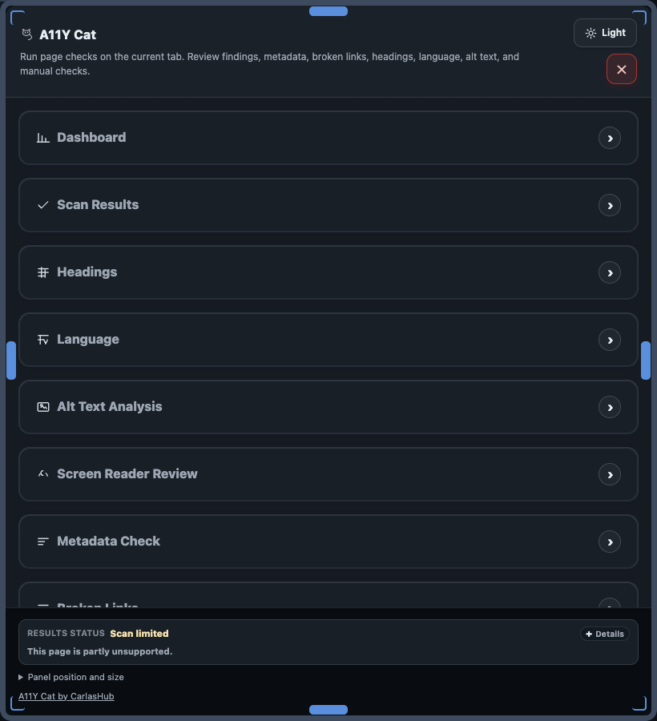

Restricted pages and frames
Browser-managed pages, protected frames, and inaccessible cross-origin contexts can limit scan coverage or evidence capture.
A11Y Cat supports accessibility review workflows. It does not replace manual testing, real assistive-technology validation, or full conformance review.

Manual assistive-technology validation is still required. Screen Reader Review is a virtual aid and not real VoiceOver, NVDA, or JAWS sign-off.
Browser-managed pages, protected frames, and inaccessible cross-origin contexts can limit scan coverage or evidence capture.
Hidden, delayed, authenticated, or interaction-dependent states are not all exercised automatically during a single scan.
Restricted browser contexts can block or reduce scan coverage and should be treated as limitation output, not a clean pass.
file:// scanning depends on extension permission and still has practical boundaries in Chrome runtime contexts.
Protected or inaccessible frames can prevent full frame inspection, creating engine-limited or coverage-limited output.
file:// pages require explicit browser permission and still have practical limits.This table separates what the extension can signal from what still requires manual test evidence.
| Limitation type | Why it happens | What it does not mean | Required follow-up |
|---|---|---|---|
| Restricted page context | Browser or host security boundary | Not a pass | Manual inspection in allowed environment |
| Protected or inaccessible frame | Frame access blocked by context/origin policy | Not a confirmed fail by itself | Inspect frame content with authorized tools |
| State-limited scan | Single current UI state was evaluated | Not complete journey coverage | Test dialogs, tabs, validation, auth states manually |
| Engine-limited or incomplete result | Insufficient runtime/context for safe verdict | Not a pass and not an automatic fail | Manual judgment with page context |
| Virtual screen reader review | Modelled review aid, not assistive tech runtime | Not AT sign-off | Test with VoiceOver, NVDA, or JAWS |
Language and spelling checks can skip unsupported languages and unknown language contexts rather than forcing unsafe assumptions.
Review-only findings are not confirmed failures until verified manually in context.
Compatibility varies by browser/runtime context and operating system, and WCAG tagging scope is constrained by the bundled axe-core configuration used in this beta.
See Compatibility and WCAG scan scope for the current environment matrix and exact WCAG tag scope. These constraints do not provide conformance certification.
For accessibility status of this documentation site itself (separate from scanner output and scanned pages), see the Accessibility statement.